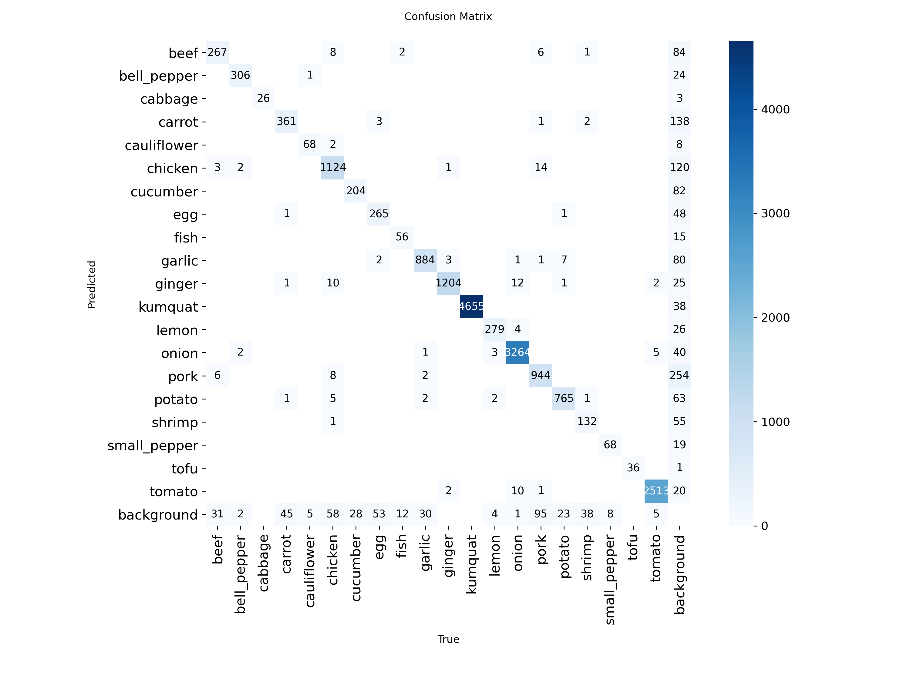
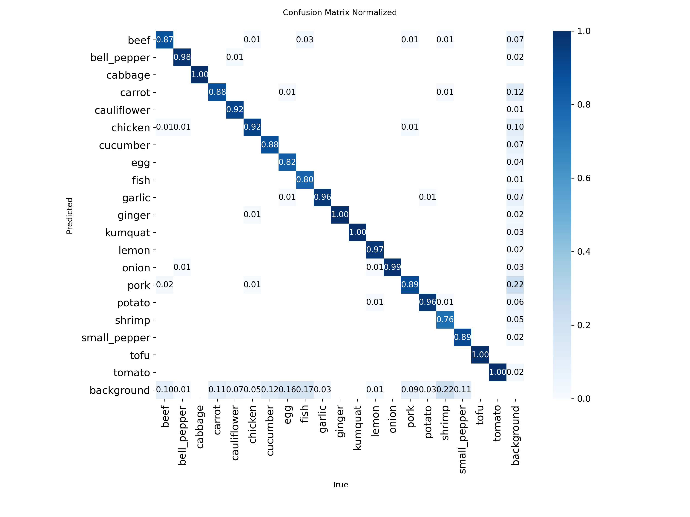
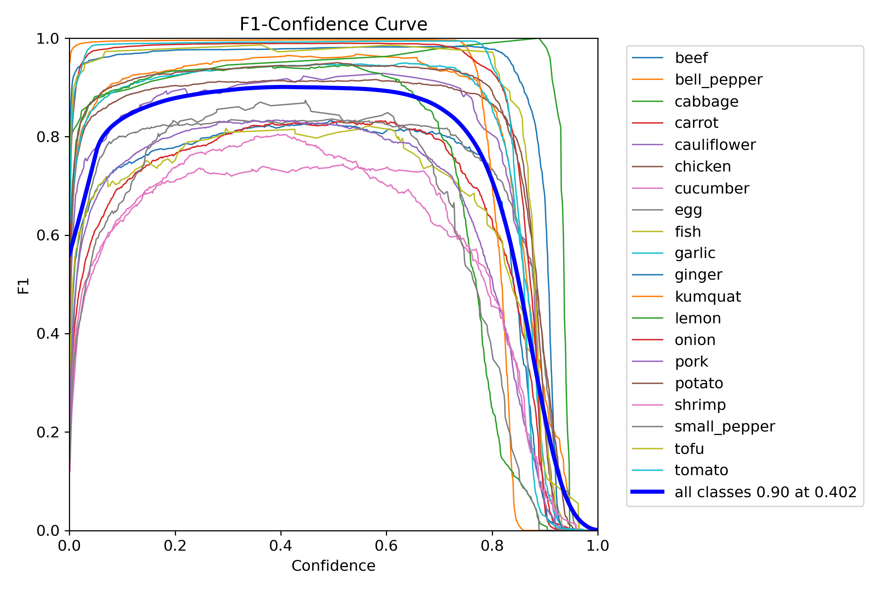
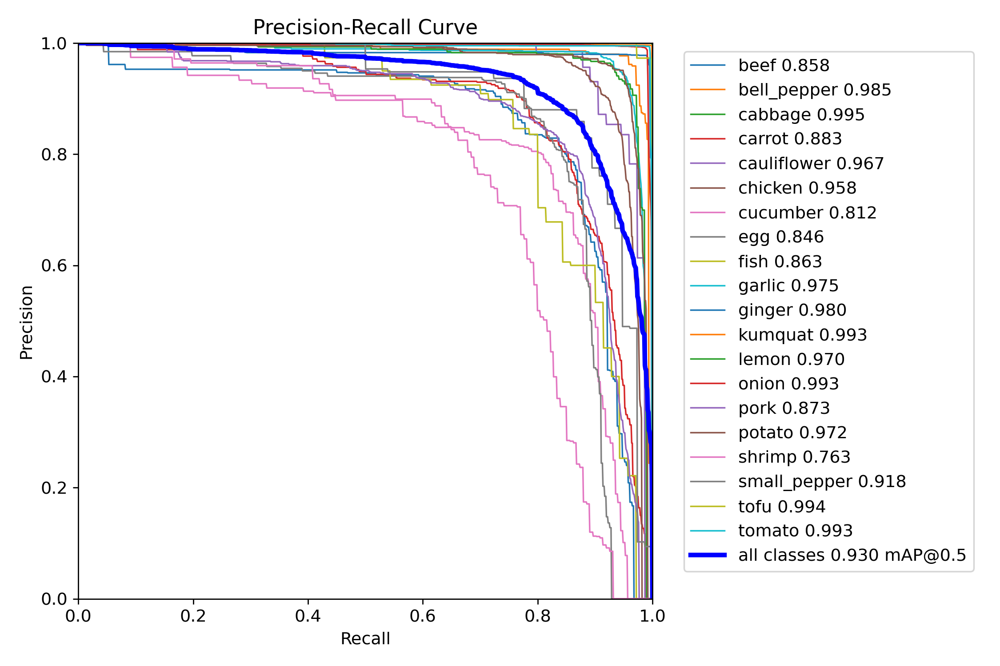
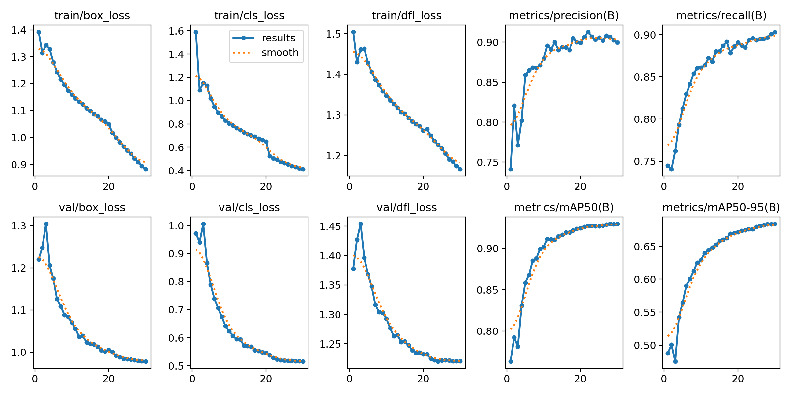

Model Methodology & Performance
An in-depth look at the training performance and evaluation metrics of our custom YOLO object detection architecture across 20 culinary ingredient classes.
Confusion Matrix
Visualizes the classification accuracy. A strong diagonal line indicates that the model successfully distinguishes between the 20 distinct ingredient classes with minimal misclassification.

Normalized Matrix
Displays the true positive rates as percentages. This provides a clearer, relative view of precision across classes, especially useful when training data is imbalanced.

F1-Confidence Curve
Demonstrates the harmonic mean of precision and recall. A high peak indicates the optimal confidence threshold for balancing false positives and false negatives.

Precision-Recall Curve
Shows the tradeoff between precision and recall. The Area Under the Curve (mAP@0.5) quantifies overall performance robustness across the 20 ingredient categories.

Validation Results Sample
Actual bounding box predictions from the validation batch. This visual proof demonstrates the model's real-world inference capability in accurately detecting and localizing multiple ingredients simultaneously within complex scenes.
